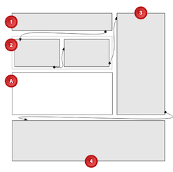

Complex Content Flow Example
Using CSS Regions, a designer is able to position an image in box ‘A’ and to flow an article's content from box ‘1’ through boxes ‘2’, ‘3’ and ‘4’.
Note that the second box should have two columns, and the image is not contained in the article.
Box ‘4’ should auto-size to render the remainder of the article content that did not fit in the earlier boxes.
See the image on the right side for an visual description of this example.
